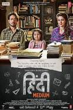

Date of Release : 19 May 2017
Cast :
- Irrfan Khan as Raj Batra
- Saba Qamar as Meeta Batra
- Deepak Dobriyal as Shyamprakash Kori
- Sanjana Sanghi as young Meeta
- Delzad Hiwale as young Raj Batra
Description :
Raj Batra is running a successful business of bridal wears in downtown Delhi. Although rich, he is not highly educated & is not fluent in English or the supposedly 'high class culture' his wife Mita aspires to be. Both of them have studied from govt run 'Hindi Medium' school, not known to have high degree of sophistication. Mita aspires that their 5 year daughter Pia should break this barrier & is adamant that she is to be admitted to one of the top 5 schools in Delhi. They visit all the 5 schools & get acquainted with the admission procedure. The top school 'Delhi Grammar School' has a condition that they give admission to students who reside within 3km radius. For this they shift to Vasant Vihar. Raj is very sad to leave his paternal home.